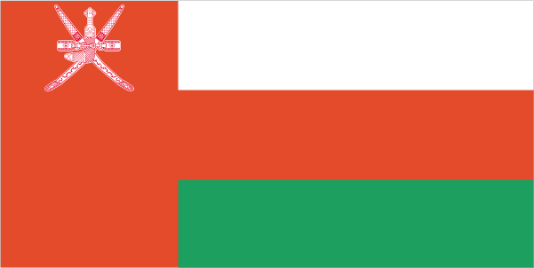
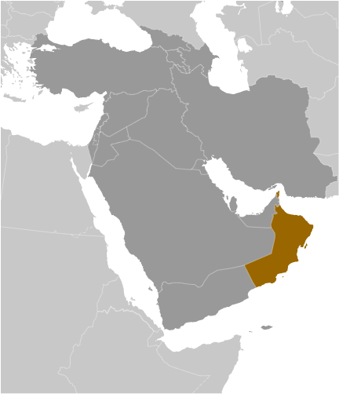
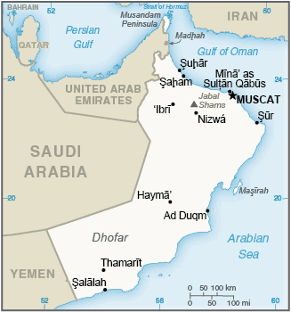

Middle East :: OMAN
Introduction :: OMAN
-
The inhabitants of the area of Oman have long prospered from Indian Ocean trade. In the late 18th century, the nascent sultanate in Muscat signed the first in a series of friendship treaties with Britain. Over time, Oman's dependence on British political and military advisors increased, although the Sultanate never became a British colony. In 1970, QABOOS bin Said Al-Said overthrew his father, and has since ruled as sultan, but he has not designated a successor. His extensive modernization program has opened the country to the outside world, while preserving the longstanding close ties with the UK and US. Oman's moderate, independent foreign policy has sought to maintain good relations with its neighbors and to avoid external entanglements. Inspired by the popular uprisings that swept the Middle East and North Africa beginning in January 2011, some Omanis staged demonstrations, calling for more jobs and economic benefits and an end to corruption. In response to those protester demands, QABOOS in 2011 pledged to implement economic and political reforms, such as granting legislative and regulatory powers to the Majlis al-Shura and increasing unemployment benefits. Additionally, in August 2012, the Sultan announced a royal directive mandating the speedy implementation of a national job creation plan for thousands of public and private sector Omani jobs. As part of the government's efforts to decentralize authority and allow greater citizen participation in local governance, Oman successfully conducted its first municipal council elections in December 2012. Announced by the Sultan in 2011, the municipal councils have the power to advise the Royal Court on the needs of local districts across Oman's 11 governorates. The Sultan returned to Oman in March 2015 after eight months in Germany, where he received medical treatment. He has since appeared publicly on a few occasions.
Geography :: OMAN
-
Middle East, bordering the Arabian Sea, Gulf of Oman, and Persian Gulf, between Yemen and the UAE21 00 N, 57 00 EMiddle Easttotal: 309,500 sq kmland: 309,500 sq kmwater: 0 sq kmcountry comparison to the world: 72twice the size of Georgia; slightly smaller than Kansastotal: 1,561 kmborder countries (3): Saudi Arabia 658 km, UAE 609 km, Yemen 294 km2,092 kmterritorial sea: 12 nmcontiguous zone: 24 nmexclusive economic zone: 200 nmdry desert; hot, humid along coast; hot, dry interior; strong southwest summer monsoon (May to September) in far southcentral desert plain, rugged mountains in north and southmean elevation: 310 melevation extremes: lowest point: Arabian Sea 0 mhighest point: Jabal Shams 3,004 mpetroleum, copper, asbestos, some marble, limestone, chromium, gypsum, natural gasagricultural land: 4.7%arable land 0.1%; permanent crops 0.1%; permanent pasture 4.5%forest: 0%other: 95.3% (2011 est.)590 sq km (2012)the vast majority of the population is located in and around the Al Hagar Mountains in the north of the country; another smaller cluster is found around the city of Salalah in the far south; most of the country remains sparsely populatedsummer winds often raise large sandstorms and dust storms in interior; periodic droughtsrising soil salinity; beach pollution from oil spills; limited natural freshwater resourcesparty to: Biodiversity, Climate Change, Climate Change-Kyoto Protocol, Desertification, Hazardous Wastes, Law of the Sea, Marine Dumping, Ozone Layer Protection, Ship Pollution, Whalingsigned, but not ratified: none of the selected agreementsconsists of Oman proper and two northern exclaves, Musandam and Al Madhah; the former is a peninsula that occupies a strategic location adjacent to the Strait of Hormuz, a vital transit point for world crude oil
People and Society :: OMAN
-
3,424,386 (July 2017 est.)note: immigrants make up over 40% of the total population, according to UN data (2015)country comparison to the world: 132noun: Omani(s)adjective: OmaniArab, Baluchi, South Asian (Indian, Pakistani, Sri Lankan, Bangladeshi), AfricanArabic (official), English, Baluchi, Urdu, Indian dialectsMuslim 85.9%, Christian 6.5%, Hindu 5.5%, Buddhist 0.8%, Jewish <0.1%, other 1%, unaffiliated 0.2% (2010 est.)note: Omani citizens represent approximately 60% of the population and are overwhelming Muslim (Ibadhi and Sunni sects each constitute about 45% and Shia about 5%); Christians, Hindus, and Buddhists accounting for roughly 5% of Omani citizens0-14 years: 30.1% (male 528,554/female 502,272)15-24 years: 18.69% (male 335,764/female 304,207)25-54 years: 43.8% (male 864,858/female 635,006)55-64 years: 3.92% (male 71,477/female 62,793)65 years and over: 3.49% (male 58,561/female 60,894) (2017 est.)total dependency ratio: 32.4youth dependency ratio: 29.4elderly dependency ratio: 3.1potential support ratio: 32.6 (2015 est.)total: 25.6 yearsmale: 26.6 yearsfemale: 24.2 years (2017 est.)country comparison to the world: 1532.03% (2017 est.)country comparison to the world: 5024 births/1,000 population (2017 est.)country comparison to the world: 543.3 deaths/1,000 population (2017 est.)country comparison to the world: 220-0.4 migrant(s)/1,000 population (2017 est.)country comparison to the world: 122the vast majority of the population is located in and around the Al Hagar Mountains in the north of the country; another smaller cluster is found around the city of Salalah in the far south; most of the country remains sparsely poplulatedurban population: 78.5% of total population (2017)rate of urbanization: 2.17% annual rate of change (2015-20 est.)MUSCAT (capital) 838,000 (2015)at birth: 1.05 male(s)/female0-14 years: 1.05 male(s)/female15-24 years: 1.1 male(s)/female25-54 years: 1.38 male(s)/female55-64 years: 1.14 male(s)/female65 years and over: 0.99 male(s)/femaletotal population: 1.19 male(s)/female (2016 est.)17 deaths/100,000 live births (2015 est.)country comparison to the world: 133total: 12.8 deaths/1,000 live birthsmale: 13.1 deaths/1,000 live birthsfemale: 12.5 deaths/1,000 live births (2017 est.)country comparison to the world: 110total population: 75.7 yearsmale: 73.7 yearsfemale: 77.7 years (2017 est.)country comparison to the world: 992.82 children born/woman (2017 est.)country comparison to the world: 6029.7% (2014)3.6% of GDP (2014)country comparison to the world: 1721.54 physicians/1,000 population (2014)1.7 beds/1,000 population (2012)improved:urban: 95.5% of populationrural: 86.1% of populationtotal: 93.4% of populationunimproved:urban: 4.5% of populationrural: 13.9% of populationtotal: 6.6% of population (2015 est.)improved:urban: 97.3% of populationrural: 94.7% of populationtotal: 96.7% of populationunimproved:urban: 2.7% of populationrural: 5.3% of populationtotal: 3.3% of population (2015 est.)NANANA27% (2016)country comparison to the world: 399.7% (2014)country comparison to the world: 735% of GDP (2013)country comparison to the world: 100definition: age 15 and over can read and writetotal population: 93%male: 96.6%female: 86% (2015 est.)total: 14 yearsmale: 13 yearsfemale: 15 years (2015)
Government :: OMAN
-
conventional long form: Sultanate of Omanconventional short form: Omanlocal long form: Saltanat Umanlocal short form: Umanformer: Sultanate of Muscat and Omanetymology: the origin of the name is uncertain, but it apparently dates back at least 2,000 years since an "Omana" is mentioned by Pliny the Elder (1st century A.D.) and an "Omanon" by Ptolemy (2nd century A.D.)absolute monarchyname: Muscatgeographic coordinates: 23 37 N, 58 35 Etime difference: UTC+4 (9 hours ahead of Washington, DC, during Standard Time)11 governorates (muhafazat, singular - muhafaza); Ad Dakhiliyah, Al Buraymi, Al Wusta, Az Zahirah, Janub al Batinah (Al Batinah South), Janub ash Sharqiyah (Ash Sharqiyah South), Masqat (Muscat), Musandam, Shamal al Batinah (Al Batinah North), Shamal ash Sharqiyah (Ash Sharqiyah North), Zufar (Dhofar)1650 (expulsion of the Portuguese)National Day, 18 November; note - coincides with the birthday of Sultan QABOOS, 18 November (1940)history: promulgated by royal decree 6 November 1996 (the Basic Law of the Sultanate of Oman serves as the constitution); amended by royal decree in 2011amendments: promulgated by the sultan or proposed by the Council of Oman and drafted by a technical committee as stipulated by royal decree and then promulgated through royal decree; amended 2011 (2016)mixed legal system of Anglo-Saxon law and Islamic lawhas not submitted an ICJ jurisdiction declaration; non-party state to the ICCtcitizenship by birth: nocitizenship by descent only: the father must be a citizen of Omandual citizenship recognized: noresidency requirement for naturalization: unknown21 years of age; universal; note - members of the military and security forces by law cannot votechief of state: Sultan and Prime Minister QABOOS bin Said Al-Said (sultan since 23 July 1970 and prime minister since 23 July 1972); note - the monarch is both chief of state and head of governmenthead of government: Sultan and Prime Minister QABOOS bin Said Al-Said (sultan since 23 July 1970 and prime minister since 23 July 1972)cabinet: Cabinet appointed by the monarchelections/appointments: members of the Ruling Family Council determine a successor from the sultan's extended family; if the Council cannot form a consensus within 3 days of the sultan's death or incapacitation, the Defense Council will relay a predetermined heir as chosen by the sultandescription: bicameral Council of Oman or Majlis Oman consists of the Council of State or Majlis al-Dawla (85 seats including the chairman; members appointed by the sultan from among former government officials and prominent educators, businessmen, and citizens) and the Consultative Council or Majlis al-Shura (85 seats; members directly elected in single- and 2-seat constituencies by simple majority popular vote to serve renewable 4-year terms); note - since political reforms in 2011, legislation from the Consultative Council is submitted to the Council of State for review by the Royal Courtelections: Consultative Assembly - last held on 25 October 2015 (next to be held in October 2019)election results: percent of vote by party - NA; seats by party - NA; note - organized political parties in Oman are legally bannedhighest court(s): Supreme Court (consists of 5 judges)judge selection and term of office: judges nominated by the 9-member Supreme Judicial Council (chaired by the monarch) and appointed by the monarch; judges appointed for lifesubordinate courts: Courts of Appeal; Administrative Court; Courts of First Instance; sharia courts; magistrates' courts; military courtsnone; note - organized political parties are legally banned in Oman, and loyalties tend to form around tribal affiliationsnoneABEDA, AFESD, AMF, CAEU, FAO, G-77, GCC, IAEA, IBRD, ICAO, ICC (NGOs), IDA, IDB, IFAD, IFC, IHO, ILO, IMF, IMO, IMSO, Interpol, IOC, IPU, ISO, ITSO, ITU, LAS, MIGA, NAM, OIC, OPCW, UN, UNCTAD, UNESCO, UNIDO, UNWTO, UPU, WCO, WFTU (NGOs), WHO, WIPO, WMO, WTOchief of mission: Ambassador Hunaina bint Sultan bin Ahmad al-MUGHAIRI (since 2 December 2005)chancery: 2535 Belmont Road, NW, Washington, DC 20008telephone: [1] (202) 387-1980FAX: [1] (202) 745-4933chief of mission: Ambassador Marc J. SIEVERS (since 15 December 2016)embassy: Jamait Ad Duwal Al Arabiyya Street, Al Khuwair area, Muscatmailing address: P.O. Box 202, P.C. 115, Madinat Al Sultan Qaboos, Muscattelephone: [968] 24-643-400FAX: [968] 24-643-740three horizontal bands of white, red, and green of equal width with a broad, vertical, red band on the hoist side; the national emblem (a khanjar dagger in its sheath superimposed on two crossed swords in scabbards) in white is centered near the top of the vertical band; white represents peace and prosperity, red recalls battles against foreign invaders, and green symbolizes the Jebel al Akhdar (Green Mountains) and fertilitykhanjar dagger superimposed on two crossed swords; national colors: red, white, greenname: "Nashid as-Salaam as-Sultani" (The Sultan's Anthem)lyrics/music: Rashid bin Uzayyiz al KHUSAIDI/James Frederick MILLS, arranged by Bernard EBBINGHAUSnote: adopted 1932; new lyrics written after QABOOS bin Said al Said gained power in 1970; first performed by the band of a British ship as a salute to the Sultan during a 1932 visit to Muscat; the bandmaster of the HMS Hawkins was asked to write a salutation to the Sultan on the occasion of his ship visit
Economy :: OMAN
-
Oman is heavily dependent on its dwindling oil resources, which generate 84% of government revenue. In 2016, low global oil prices drove Oman’s budget deficit to $11.5 billion, or approximately 19% of GDP. Oman has limited foreign assets and is issuing debt to cover its deficit.Oman is using enhanced oil recovery techniques to boost production, but has simultaneously pursued a development plan that focuses on diversification, industrialization, and privatization, with the objective of reducing the oil sector's contribution to GDP from 46% at present to 9% by 2020 in accordance with Oman’s ninth five-year development plan. Tourism and gas-based industries are key components of the government's diversification strategy.Muscat also has notably focused on creating more Omani jobs to employ the rising number of nationals entering the workforce. However, high social welfare benefits — that had increased in the wake of the 2011 Arab Spring — have challenged the government's ability to effectively balance its budget in light of low export oil prices. In response, Omani officials imposed austerity measures to its gasoline and diesel subsidies in 2016, with further subsidy cuts planned for electricity and liquid petroleum gas. The spending cuts have faced some public opposition, which could hinder their implementation.$184.7 billion (2016 est.)$177 billion (2015 est.)$168.1 billion (2014 est.)note: data are in 2016 dollarscountry comparison to the world: 66$66.29 billion (2016 est.)3% (2016 est.)4.2% (2015 est.)2.5% (2014 est.)country comparison to the world: 93$46,100 (2016 est.)$47,400 (2015 est.)$46,300 (2014 est.)note: data are in 2016 dollarscountry comparison to the world: 3419.4% of GDP (2016 est.)18.3% of GDP (2015 est.)34.2% of GDP (2014 est.)country comparison to the world: 91household consumption: 35.9%government consumption: 27.2%investment in fixed capital: 36.7%investment in inventories: 1.3%exports of goods and services: 47%imports of goods and services: -48.1% (2016 est.)agriculture: 1.8%industry: 47.6%services: 53.9% (2016 est.)dates, limes, bananas, alfalfa, vegetables; camels, cattle; fishcrude oil production and refining, natural and liquefied natural gas production; construction, cement, copper, steel, chemicals, optic fiber0.5% (2016 est.)country comparison to the world: 152968,800note: about 60% of the labor force is non-national (2007 est.)country comparison to the world: 145agriculture: NA%industry: NA%services: NA%15% (2004 est.)country comparison to the world: 171NA%lowest 10%: NA%highest 10%: NA%revenues: $19.79 billionexpenditures: $33.57 billion (2016 est.)31.3% of GDP (2016 est.)country comparison to the world: 73-21.8% of GDP (2016 est.)country comparison to the world: 21631.4% of GDP (2016 est.)12.8% of GDP (2015 est.)country comparison to the world: 157calendar year1.1% (2016 est.)0.1% (2015 est.)country comparison to the world: 942% (31 December 2010)0.05% (31 December 2009)country comparison to the world: 1165.08% (31 December 2016 est.)4.76% (31 December 2015 est.)country comparison to the world: 142$12.95 billion (31 December 2016 est.)$13.96 billion (31 December 2015 est.)country comparison to the world: 75$40.11 billion (31 December 2016 est.)$39.39 billion (31 December 2015 est.)country comparison to the world: 71$46.47 billion (31 December 2016 est.)$45.1 billion (31 December 2015 est.)country comparison to the world: 66$41.12 billion (31 December 2015 est.)$37.83 billion (31 December 2014 est.)$36.77 billion (31 December 2013 est.)country comparison to the world: 58$-12.32 billion (2016 est.)$-10.81 billion (2015 est.)country comparison to the world: 187$27.54 billion (2016 est.)$35.68 billion (2015 est.)country comparison to the world: 62petroleum, reexports, fish, metals, textilesChina 47.8%, UAE 8.3%, India 4.1% (2016)$21.29 billion (2016 est.)$26.56 billion (2015 est.)country comparison to the world: 68machinery and transport equipment, manufactured goods, food, livestock, lubricantsUAE 44.9%, China 4.8%, India 4.8% (2016)$20.26 billion (31 December 2016 est.)$17.54 billion (31 December 2015 est.)country comparison to the world: 62$27.05 billion (31 December 2016 est.)$15.3 billion (31 December 2015 est.)country comparison to the world: 83$NA$NAOmani rials (OMR) per US dollar -0.3845 (2016 est.)0.3845 (2015 est.)0.3845 (2014 est.)0.3845 (2013 est.)0.3845 (2012 est.)
Energy :: OMAN
-
population without electricity: 100,000electrification - total population: 98%electrification - urban areas: 99%electrification - rural areas: 93% (2013)30.79 billion kWh (2015 est.)country comparison to the world: 6427.62 billion kWh (2015 est.)country comparison to the world: 630 kWh (2016 est.)country comparison to the world: 1720 kWh (2016 est.)country comparison to the world: 1767.869 million kW (2015 est.)country comparison to the world: 70100% of total installed capacity (2015 est.)country comparison to the world: 130% of total installed capacity (2015 est.)country comparison to the world: 1460% of total installed capacity (2015 est.)country comparison to the world: 1890% of total installed capacity (2015 est.)country comparison to the world: 1981.007 million bbl/day (2016 est.)country comparison to the world: 20745,800 bbl/day (2014 est.)country comparison to the world: 176,970 bbl/day (2014 est.)country comparison to the world: 785.373 billion bbl (1 January 2017 es)country comparison to the world: 23224,000 bbl/day (2014 est.)country comparison to the world: 49176,000 bbl/day (2015 est.)country comparison to the world: 6133,240 bbl/day (2014 est.)country comparison to the world: 59713.9 bbl/day (2014 est.)country comparison to the world: 20329.93 billion cu m (2015 est.)country comparison to the world: 2638.03 billion cu m (2015 est.)country comparison to the world: 351.99 billion cu m (2015 est.)country comparison to the world: 3810 billion cu m (2015 est.)country comparison to the world: 28651.3 billion cu m (1 January 2017 es)country comparison to the world: 3069 million Mt (2013 est.)country comparison to the world: 51
Communications :: OMAN
-
total subscriptions: 422,518subscriptions per 100 inhabitants: 13 (July 2016 est.)country comparison to the world: 108total: 6,866,260subscriptions per 100 inhabitants: 205 (July 2016 est.)country comparison to the world: 109general assessment: modern system consisting of open-wire, microwave, and radiotelephone communication stations; limited coaxial cable; domestic satellite system with 8 earth stationsdomestic: fixed-line and mobile-cellular subscribership both increasing with fixed-line phone service gradually being introduced to remote villages using wireless local loop systemsinternational: country code - 968; the Fiber-Optic Link Around the Globe (FLAG) and the SEA-ME-WE-3 submarine cable provide connectivity to Asia, the Middle East, and Europe; satellite earth stations - 2 Intelsat (Indian Ocean), 1 Arabsat (2016)1 state-run TV broadcaster; TV stations transmitting from Saudi Arabia, the UAE, and Yemen available via satellite TV; state-run radio operates multiple stations; first private radio station began operating in 2007 and 2 additional stations now operating (2007).omtotal: 2,342,483percent of population: 69.8% (July 2016 est.)country comparison to the world: 96
Transportation :: OMAN
-
number of registered air carriers: 1inventory of registered aircraft operated by air carriers: 45annual passenger traffic on registered air carriers: 6,365,784annual freight traffic on registered air carriers: 412,234,008 mt-km (2015)A4O (2016)132 (2013)country comparison to the world: 44total: 13over 3,047 m: 72,438 to 3,047 m: 5914 to 1,523 m: 1 (2017)total: 119over 3,047 m: 22,438 to 3,047 m: 71,524 to 2,437 m: 51914 to 1,523 m: 33under 914 m: 26 (2013)3 (2013)condensate 106 km; gas 4,224 km; oil 3,558 km; oil/gas/water 33 km; refined products 264 km (2013)total: 60,230 kmpaved: 29,685 km (includes 1,943 km of expressways)unpaved: 30,545 km (2012)country comparison to the world: 70total: 5by type: chemical tanker 1, passenger 1, passenger/cargo 3registered in other countries: 15 (Malta 5, Panama 10) (2010)country comparison to the world: 129major seaport(s): Mina' Qabus, Salalah, Suharcontainer port(s) (TEUs): Salalah (3,200,000)LNG terminal(s) (export): Qalhat
Military and Security :: OMAN
-
13.73% of GDP (2016)14.38% of GDP (2015)13.51% of GDP (2014)14.81% of GDP (2013)16.08% of GDP (2012)country comparison to the world: 3Sultan's Armed Forces (SAF): Royal Army of Oman, Royal Navy of Oman, Royal Air Force of Oman (al-Quwwat al-Jawwiya al-Sultanat Oman) (2013)18-30 years of age for voluntary military service; no conscription (2012)
Transnational Issues :: OMAN
-
boundary agreement reportedly signed and ratified with UAE in 2003 for entire border, including Oman's Musandam Peninsula and Al Madhah exclave, but details of the alignment have not been made publicrefugees (country of origin): 5,000 (Yemen) (2017)